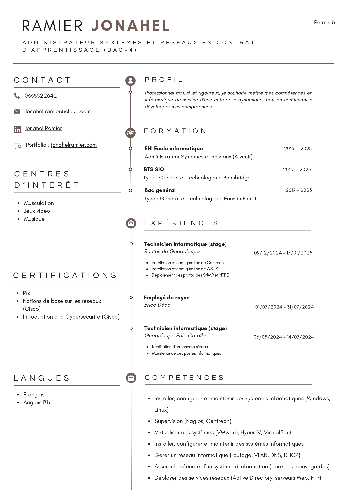

Jonahel Ramier
BTS services informatiques aux organisations (BAC+2)
À propos de moi
Passionné par le développement informatique et les nouvelles technologies, je suis actuellement étudiant en BTS SIO (Services Informatiques aux Organisations). Mon objectif est de devenir un administrateur système et réseau.
Je suis particulièrement intéressé par le développement web moderne, l'intelligence artificielle et la cybersécurité.
Mes Compétences
Développement Web
- HTML
- CSS
- PHP
- MySQL
Logiciels utilisés
- VMware
- Oracle VM VirtualBox
- PuTTY
- Cisco Packet Tracer
- MySQL
Systèmes d'exploitation
- Windows
- Windows Server
- Linux (Debian, Ubuntu)
Mon Parcours
2023 - Présent
BTS SIO - Services Informatiques aux Organisations
Lycée général et technologique Baimbridge
2020 - 2023
Baccalauréat Général
Lycée Général et Technologique Faustin Fléret
2016 - 2020
Brevet des collèges
Collège Général de Gaulle
Mon Curriculum vitae
